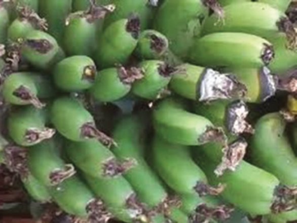

(iii) Cigar-end Rot: This disease is caused by the fungus Verticillium theobromae.
Symptoms: The disease starts at the tip of the banana, showing up as small, dark
brown to black spots. These spots enlarge and expand towards the base, causing
the tip to shrivel and darken like a burnt cigar end, hence the name “cigar end
rot” (Figure 2.6). In severe cases, the rot can penetrate deeper into the fruit,
affecting the flesh and making the banana fruits unsuitable for consumption.
It is favoured by high humidity caused by overcrowded fields or stools and
abundant leaf trash.
Management: The disease can be managed by ensuring proper field hygiene
and eliminating excess suckers. It is also recommended to remove male flower
buds that are located 15 cm below the last hand once bunch formation is
complete. You can consult agricultural experts for advice on the appropriate
fungicides to use.

Figure 2.6: Symtoms of Cigar-end Rot in banana fruits
(iv) Black Sigatoka: The disease is caused by the fungus Mycosphaerella
fijiensis.
Symptoms: The disease begins as small, dark streaks on the undersides of the
leaves. These streaks expand and merge into large black or dark brown patches,
sometimes with a yellow halo. Infected leaves turn yellow, wither, and die
early, reducing photosynthesis and stunting plant growth (Figure 2.7).